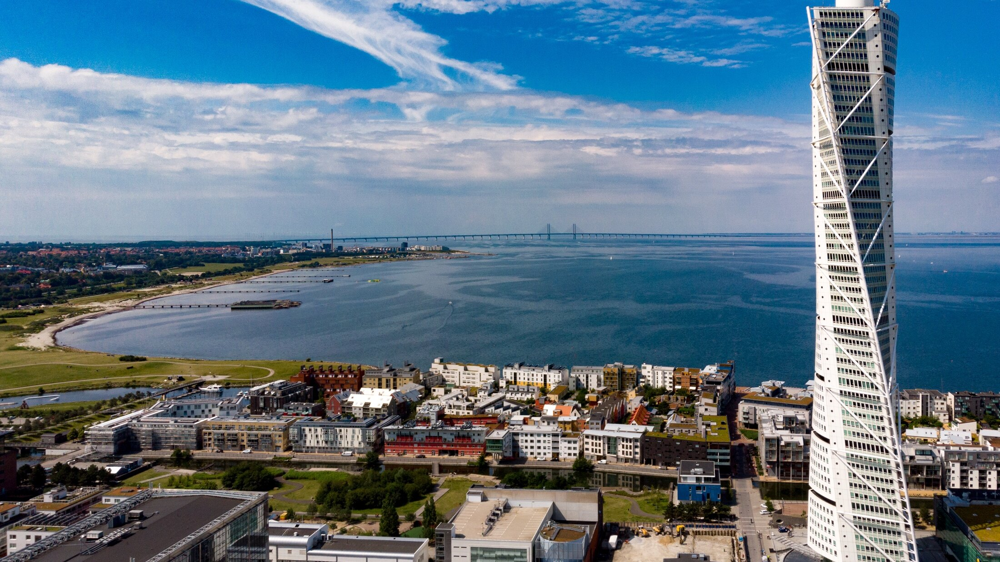
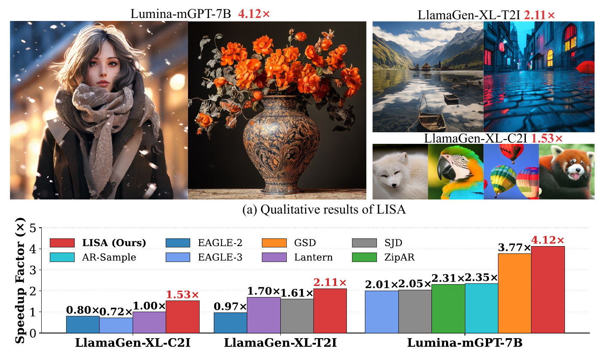
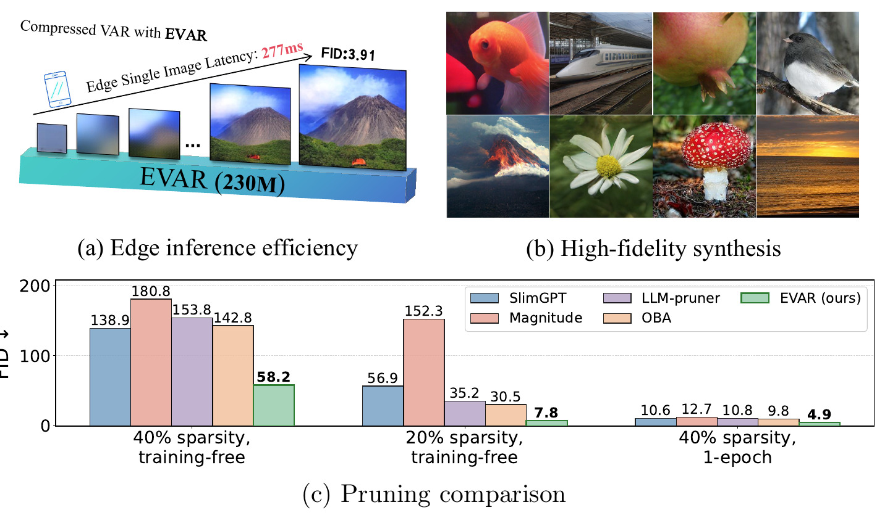
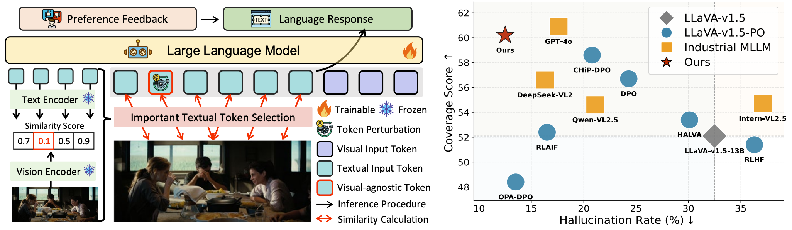

LISA: Locality-Informed Speculative Decoding for Accelerating Autoregressive Image Generation
Speculative decoding for autoregressive image generation

ECCV 2026 · Malmö, Sweden · Sep 8-12
Three accepted papers and one tutorial on efficient, trustworthy image generation and multimodal understanding.

Speculative decoding for autoregressive image generation

Principled pruning for edge visual autoregressive models

Token-adaptive preference optimization for MLLM grounding

ECCV 2026 Tutorial
Multimodal large language models are powerful but expensive to serve. This tutorial presents a systematic view of efficient inference through two complementary lenses: approximate computing that removes model and data redundancy while preserving practical utility, and exact computing that improves systems and hardware execution without changing model outputs.
Three main topics
Quantization, sparsity, and low-rank decomposition for reducing model redundancy in MLLM inference.
Training and training-free compression methods for long multimodal inputs and autoregressive generation.
Exact computing methods and inference frameworks that improve throughput and latency without changing the computed result.
Morning program
Three technical sessions, followed by questions and closing remarks.
Huan Wang
Sathya Narayanan Ravi
Bo Li
Informal discussion
Chenyang Zhao
Huan Wang
The ECCV 2026 Crew
Five ENCODE Lab researchers contributing papers, presentations, and the tutorial.
Malmö photograph: © Ralf Roletschek, Wikimedia Commons. Cropped version from our original ECCV page, licensed under CC BY-SA 1.0 Finland.